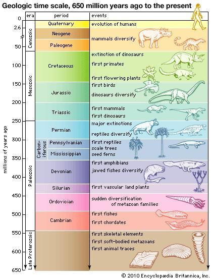

| Feature Article - July 2018 |
| by Do-While Jones |
A genetic study blows up the geologic timescale.
Several of our readers wrote to alert us to an article which began by saying,
|
In a massive genetic study, senior research associate at the Program for the Human Environment at Rockefeller University Mark Stoeckle and University of Basel geneticist David Thaler discovered that virtually 90 percent of all animals on Earth appeared at right around the same time. More specifically, they found out that 9 out of 10 animal species on the planet came to being at the same time as humans did some 100,000 to 200,000 years ago. 1 |
If true, this finding completely destroys the evolutionists' iconic timescale for two reasons.
|
 |
|---|
| The Fictional Geologic Column |
First, evolutionists believe that fish evolved before amphibians, which evolved before reptiles, which evolved before mammals, and so on. You no doubt have seen charts of the fictional geologic column showing the sequence in which plants and animals supposedly evolved. This study suggests all species originated nearly simultaneously, not sequentially.
Second, 150,000 years (or so) is about 4000 times shorter than the 650 million years believed by evolutionists. Of course, 100,000 years is 10 times longer than the 10,000 (or less) years believed by Biblical Creationists, too, so the study doesn't support either group's timescale.
Creationist Sean Pitman immediately commented on the study.
|
What is surprising here, from an evolutionary perspective anyway is that almost all animal species have around the same number of these neutral mitochondrial mutations within their individual populations. And, the mutation rate based on phylogenic evolutionary relationships suggests that all of these tens of thousands of different species, including humans, came into existence between 100,000 and 200,000 years ago. This, by itself, is rather shocking from the Darwinian perspective. And, that's not all. All of these species where [were?] extremely isolated from each other, genetically, in "sequence space" with very clear genetic boundaries and nothing in between. 2 |
Then, Pitman pointed out that circular reasoning (which is logically invalid) was used to arrive at the hundreds of thousands of years.
|
Contrary to what some might think, the mitochondrial mutation rate used here was not determined by any sort of direct analysis, but by supposed phylogenic evolutionary relationships between humans and chimps. In other words, the mutation rate was calculated based on the assumption that the theory in question was already true. This is a rather circular assumption and, as such, all results that are based on this assumption will be consistent with this assumption - like a self-fulfilling prophecy. Since the mutation rate was calculated based on previous assumptions of expected evolutionary time, then the results will automatically "confirm" those assumptions. 3 |
The bulk of Pitman's article argues that mutation rates are actually much faster than the study used, so the estimated times are too long. Pitman ends his analysis by saying,
|
So, the most reasonable conclusion here, it would seem, is that this data strongly favors of the claims of the Bible [italics his] - claims regarding distinct non-overlapping "kinds" of animals that were recently created and which recently survived a severe bottle-neck event in the form of a catastrophic world-wide Noachian Flood that occurred just a few thousand years ago. The genetic evidence that is currently in hand strongly supports that claim vs. the Darwinian story of origins where animals have existed and evolved continuously on this planet, beginning with a single common ancestor of all living things, over the course of hundreds of millions of years. That story simply doesn't predict the genetic evidence that is in hand today. After all, the "missing links" within the genetic data are even more clear and striking than the missing links in the fossil record that "perplexed" Darwin. 4 |
Evolutionist Marlowe Hood claims that Stoeckle's and Thaler's study merely reveals some "new facets of evolution." 5 He attributes the lack of diversity to a variation of the Bottleneck Effect. The idea behind the Bottleneck Effect is that when a species is driven nearly to extinction, the few surviving individuals who make it through the narrow bottleneck belong to a tiny population without much genetic diversity. Thus, the lack of genetic diversity makes it appear that the species originated when they were nearly driven to extinction, not when they originally evolved.
But, since the bottleneck explanation would require that nearly every species was driven nearly to extinction about 150,000 years ago, it isn't a satisfactory explanation because there wasn't a nearly universal mass extinction 150,000 years ago. So, they say, there must be another (not yet known) explanation. Here's how one evolutionist explained it:
|
Environmental trauma is one possibility, explained Jesse Ausubel, director of the Program for the Human Environment at The Rockefeller University. "Viruses, ice ages, successful new competitors, loss of prey--all these may cause periods when the population of an animal drops sharply," he told AFP, commenting on the study. "In these periods, it is easier for a genetic innovation to sweep the population and contribute to the emergence of a new species." But the last true mass extinction event was 65.5 million years ago when a likely asteroid strike wiped out land-bound dinosaurs and half of all species on Earth. This means a population "bottleneck" is only a partial explanation at best. "The simplest interpretation is that life is always evolving," said Stoeckle. "It is more likely that--at all times in evolution--the animals alive at that point arose relatively recently." In this view, a species only lasts a certain amount of time before it either evolves into something new or goes extinct. 6 |
We've given you brief summaries of both the creationist and evolutionist reactions to the study, with links to both sides to help you make your own decision. Rather than comment on creationist and evolutionist reactions, we want to comment on the study itself.
Before we begin, we do need to establish a minimal biological background. A cell consists of a membrane with lots of stuff inside. Two pieces of stuff are the nucleus and some mitochondria. Both of them have DNA.
The DNA in the nucleus of a human cell is about three billion base pairs long, containing tens of thousands of genes. That's the DNA we usually talk about because those tens of thousands of genes in the nucleus have the most influence on the plant or animal built from the DNA blueprint. But the mitochondria have some DNA in them, too.
|
The human mitochondrial DNA (mtDNA) is a double-stranded, circular molecule of 16,569 base pairs and contains 37 genes coding for two rRNAs, 22 tRNAs and 13 polypeptides. 7 |
Since the mtDNA has fewer genes than nuclear DNA, that makes it easier to analyze mtDNA.
|
The other, less familiar type of DNA is one found in the mitochondria of cells. The mitochondria generate energy for the cell and contains 37 genes. One of these is the COI gene, which is used to create DNA barcodes. All species have a very similar mitochondrial DNA, but their DNA is also different enough so we can distinguish between species. Paul Hebert, biologist and director of the Biodiversity Institute of Ontario, developed a new way to identify species by studying the COI gene. 8 |
Stoeckle and Thaler studied one particuar mtDNA gene, the COI gene because virtually every living thing has this gene. It has previously been studied thoroughly, and there is a lot of existing data in the professional literature about this particular gene. In fact, their paper ends with 162 references!
The abstract of their study begins and ends with these words:
|
More than a decade of DNA barcoding encompassing about five million specimens covering 100,000 animal species supports the generalization that mitochondrial DNA clusters largely overlap with species as defined by domain experts. ... Several convergent lines of evidence show that mitochondrial diversity in modern humans follows from sequence uniformity followed by the accumulation of largely neutral diversity during a population expansion that began approximately 100,000 years ago. A straightforward hypothesis is that the extant populations of almost all animal species have arrived at a similar result consequent to a similar process of expansion from mitochondrial uniformity within the last one to several hundred thousand years. 9 |
To put it simply, the data from the analysis of the same gene in five million individuals shows that the mutation rate generally believed by evolutionists is inconsistent with the time evolutionists generally believe that species have been evolving. The genetic data does not support conventional evolutionary beliefs. Either the assumed mutation rate or the assumed evolutionary timescale (or both) must be wrong.
That contradiction between theory and reality is so shocking that it is easy to miss the title of the article, "Why should mitochondria define species?" Stoeckle and Thaler weren't trying to figure out how long it has been since various species evolved. They were trying to prove that analysis of DNA barcodes is a better way to define species!
|
Mitochondrial Cytochrome Oxidase Subunit I DNA barcodes (COI barcodes, often shortened to "DNA barcodes" or "barcodes" in this article) began as an aid to animal species identification and made no claims of contributing to evolutionary theory. Five million DNA barcodes later the consistent and commensurable pattern they present throughout the animal kingdom is one of the most general in biology. In well-studied groups the majority of DNA barcode clusters agree with domain experts' judgment of distinct species. 10 |
Over the past 22 years, we have addressed the difficulty of distinguishing species several times.11 12 13 Stoeckle and Thaler were trying to solve that problem. They had to admit the existence of the problem in order to offer their solution.
|
There are approximately 30 different definitions of species in the biological, philosophical, and taxonomical literatures. Almost all of them share the idea that species are distinct entities in biology and the corollary idea that there are discontinuities among species. In their clarifying and valuable analyses Mayr and de Queiroz point out that all definitions of species involve separate monophyletic evolutionary lineages (with important exceptions where symbiosis or horizontal gene transfer are key). Different distinguishing factors such as mating incompatibility, ecological specialization, and morphological distinctiveness evolve, in various cases, in a different temporal sequence. During the process, as species diverge and emerge some of these characteristics will be fulfilled while others are not. Disagreement is inevitable when different properties are considered necessary and sufficient to fit one or another definition of "species". There are two important observations regarding how COI barcodes fit into the differing definitions of species. First, the cluster structure of the animal world found in COI barcode analysis is independent of any definition(s) of species. Second, domain experts' judgments of species tend to agree with barcode clusters and many apparent deviations turn out to be "exceptions that prove the rule". Controversy around the edges, e.g. disagreements about whether or not borderline cases constitute species or subspecies should not obscure visualizing the overall structure of animal biodiversity. It is unavoidable that some cases will be considered as species by one definition and not another. Controversial cases can illuminate in the context of William Bateson's adage to "treasure your exceptions" but they should not obscure the agreement for most cases and an appreciation of the overall structure within the animal kingdom. This pattern of life, close clustering within individual species with spaces around clusters, can be visualized and demonstrated in different ways and with different statistics (e.g., Figs. 1-4). It qualifies as an empirically-determined evolutionary law. Barcode distribution is arrived at independently but consistent with a view of biology as composed of discrete entities that on different levels include organisms and species. 14 |
Their position is that,
|
The tight clustering of barcodes within species and unfilled sequence space among them are key facts of animal life that evolutionary theory must explain. Many aspects of speciation are complex. Barcodes are unique in being quantifiably commensurable across all animal species and almost always yielding the same single simple answer. 15 |
What they are admitting is that, like the "missing links" in the fossil record, there are missing links in the barcodes. But unlike the missing links in the fossil record, which can be blamed on an incomplete fossil record, the DNA barcodes are not incomplete.
|
The pattern of DNA barcode variance is the central fact of animal life that needs to be explained by evolutionary theory. In 'The Structure of Scientific Revolutions' Thomas Kuhn makes the point that every scientific model takes certain facts of nature or experimental results as the key ones it has to explain. We take the clustering structure of COI barcodes--small variance within species and often but not always sequence gaps among nearest neighbor species--as the primary fact that a model of evolution and speciation must explain. The pattern of life seen in barcodes is a commensurable whole made from thousands of individual studies that together yield a generalization. The clustering of barcodes has two equally important features: 1) the variance within clusters is low, and 2) the sequence gap among clusters is empty, i.e., intermediates are not found. 16 |
Let's try to explain that in simple terms. Evolutionary theory is based on the idea that small, gradual changes accumulate and result in big changes after a long time. If that is true, then species should blend together like the colors of a rainbow. Looking at a rainbow, it is difficult to tell exactly where the red ends and the orange begins. In the same way, if the theory of evolution were true, there would be such subtle differences between species that it would be hard to tell them apart. If the theory of evolution were true, in a complete fossil record there would not be any missing links.
But, in reality, there are clear differences between species. These differences are evident in living species, and in fossils. Yes, scientists argue about which differences are the most important ones to use when identifying species, but that is beside the point. The differences are there, regardless of their importance.
|
A key prediction of naïve neutral theory that does not hold up against extensive barcode data from across the animal kingdom is that larger populations or older species should harbor more neutral variation. The key incompatibility of naïve neutral theory with biological fact is that the theory considers populations at equilibrium in the sense that the population be at stable numbers for approximately as many generations as the mutation rate per generation. The evolution of modern humans offers a specific solution to the animal-kingdom-wide dilemma of missing neutral mutations. 17 |
Stoeckle and Thaler recognize that there are distinctive differences in the COI gene which are species-unique, and therefore these differences (barcodes) can be used to identify species as accurately as the barcode reader at the grocery store. These differences are more compatible with the view of Linnaeus (the creationist who created the original classification system based on physical similarity) than Darwin's view (that is, the view of modern evolutionists who have modified the classification system to reflect the assumed evolutionary relationships).
|
In a founding document of phylogeography, Avise and colleagues noted the long-standing divide in biology between the intellectual lineages of Linnaeus for whom species are discrete entities and those of Darwin who emphasize incremental change within species leading to new species. 18 |
While trying to get biologists to accept genetic barcode analysis as a more accurate way to define species, Stoeckle and Thaler opened a can of worms.
The fact that the COI gene of different species is so easily identifiable is the first worm. There is no reason why random, neutral mutations should produce distinctive clusters of differences. The differences should be randomly, and evenly, distributed.
The second worm is that the number of differences in the COI gene is too small to be consistent with the theory of evolution. Either the mutation rate evolutionists use for their calculations is wrong, or the time evolutionists believe life has existed is wrong.
The more scientists learn about biology and genetics, the less plausible the theory of evolution becomes. But rather than accept the obvious conclusion that the theory is wrong, evolutionists keep trying to make the theory fit the facts, claiming this is just a "new facet" of the theory. Give up already!
| Quick links to | |
|---|---|
| Science Against Evolution Home Page |
Back issues of Disclosure (our newsletter) |
| Web Site of the Month |
Topical Index |
Footnotes:
1
Nicole Arce, Tech Times, 30 May 2018, "Massive Genetic Study Reveals 90 Percent Of Earth's Animals Appeared At The Same Time", http://www.techtimes.com/articles/228798/20180530/massive-genetic-study-reveals-90-percent-of-earth-s-animals-appeared-at-the-same-time.htm
2
Sean Pitman, "Most Species the 'Same Age' with No 'In-Between' Species", http://www.educatetruth.com/featured/all-species-the-same-age-with-no-in-between-species/
3
ibid.
4
ibid.
5
Marlowe Hood, 28 May, 2018, "Sweeping gene survey reveals new facets of evolution", https://phys.org/news/2018-05-gene-survey-reveals-facets-evolution.html
6
ibid.
7
https://www.sciencedirect.com/science/article/pii/S0005272898001613
8
Nicole Arce, Tech Times, 30 May 2018, "Massive Genetic Study Reveals 90 Percent Of Earth's Animals Appeared At The Same Time", http://www.techtimes.com/articles/228798/20180530/massive-genetic-study-reveals-90-percent-of-earth-s-animals-appeared-at-the-same-time.htm
9
M. Y. Stoeckle and D. S. Thaler, "Why should mitochondria define species?", https://phe.rockefeller.edu/news/wp-content/uploads/2018/05/Stoeckle-Thaler-Final-reduced.pdf
10
ibid.
11
Disclosure, March 1998, "The Classification Problem"
12
Disclosure, March 2002, "The Species Problem"
13
Disclosure, December 2017, "Origin of Something or Other"
14
M. Y. Stoeckle and D. S. Thaler, "Why should mitochondria define species?", https://phe.rockefeller.edu/news/wp-content/uploads/2018/05/Stoeckle-Thaler-Final-reduced.pdf
15
ibid.
16
ibid.
17
ibid.
18
ibid.